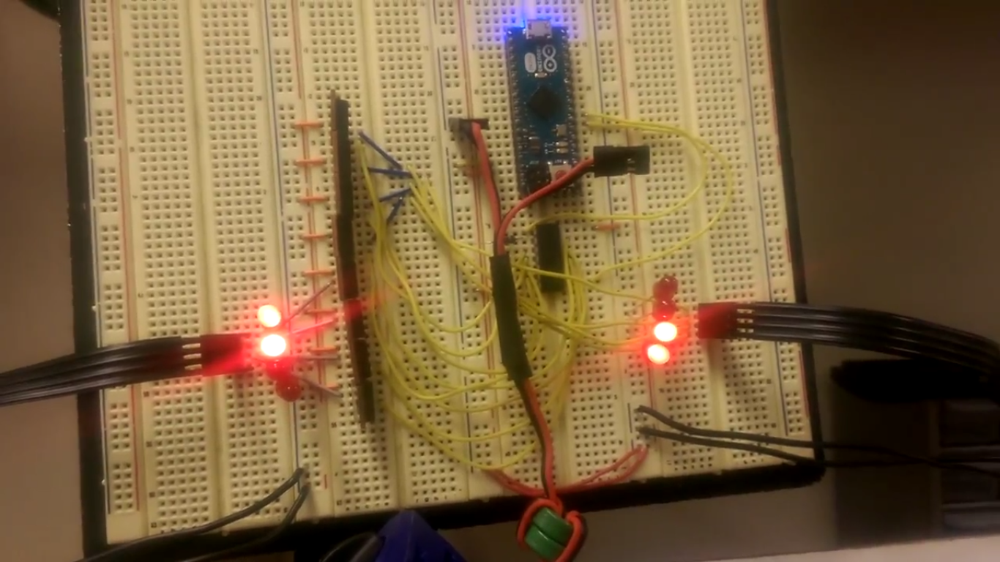

Homemade stepper driver from discrete transistors
This is a wireless drawing robot I built with a friend for the 2014 Boilermake hackathon. We didn't have a stepper driver at the time, so we built one with some discrete power transistors and a shift register. Boilermake provided some hackable badges with ATMegas and wireless modules which we repurposed with one badge controlling the robot and another badge acting as a wireless remote.